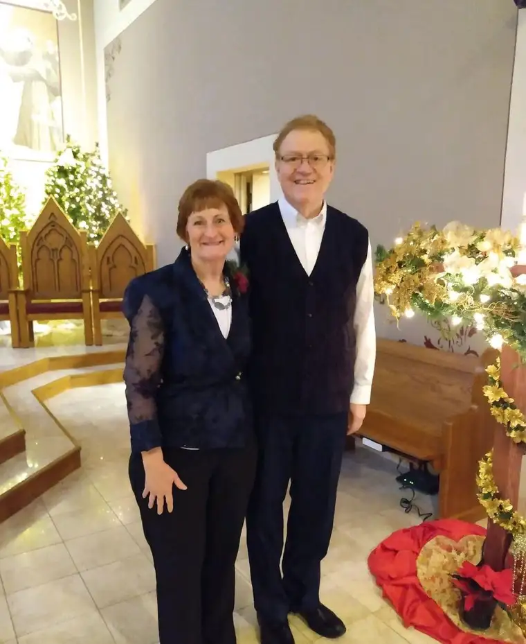

FARGO — As Deacon Ben and Jennine Seitz were considering names for their new ministry for married couples, the Biblical story of the Wedding Feast at Cana came to mind.

“Six Stone Jars refers to the first miracle of Christ,” Deacon Ben says, noting that, in that story, the hosts ran out of wine, but through Mary’s prodding, Jesus performed his first miracle. “In those six, 30-gallon jars, water was transformed into wine.”
The story attests to the superabundance of God’s grace, he says, adding that 180 gallons of wine was likely more than needed. It was also the finest wine. “God always wants to give us the very best, if we’re only willing to receive it.”
Mary’s intercession also was key. “Nobody asked her, but she saw a need,” he says. “She saw something that would have caused embarrassment, and interceded for that couple.”
Though running out of wine may seem an insignificant development to some, he says, Mary and her son did not shrug it off. “They stand ready to help us if we ask.”
All of these lessons have entered into the Six Stone Jars Mission ministry, which aims to help the faithful discover how much God wants to be part of the solution in our everyday struggles, mainly through retreats and parish missions.
Getting away
Pat Nistler and his wife, Brenda, attended a recent Six Stone Jars Mission retreat for married couples and couldn’t escape the parallels, yet differences, between that and a vacation. “A couple can go on a vacation and come back more tired than when they left,” he says.
Instead of going on vacations, Jesus invited his disciples on retreat. “They went out on the water, and he taught them, and they came back more refreshed. They learned more about themselves, and for us, we learn more about our spouses.”
We can easily take for granted our spouses in the day to day, Nistler suggests, but committing to getting away together can be a blessing. “It puts you in an environment where you’re not going to run to the store or turn on the TV, and you have an opportunity to communicate with your spouse more than you did over the last 30 days.”
Before starting the ministry, Jennine says, she and Deacon Ben would go on retreats separately. But returning home, they found themselves frustrated, because they couldn’t really share the experience with each other. “It just helps so much to live that experience with your spouse, and reflect together on the talks that are given.”
Bringing it home

John Klocke and his wife, Jan, also attended a recent Six Stone Jars retreat, along with a retreat last year led by the Seitzes, just prior to the ministry officially forming.
“Last year, there was a lot of fruit. It broke open the idea of a deeper prayer life, of lectio divina—how to do that process,” he says, referring to a contemplative form of prayer using Scripture to “go deeper.”
After learning that form of prayer and becoming more comfortable with it while on retreat, he says, he and Jan didn’t want to stop. They began getting together every morning to pray, reflecting on Scripture and daily readings, then discussing their insights.
“It’s been a major change in our spiritual life that has stuck, and I credit the Seitzes with that,” John says. “They have a great husband-wife structure and share insights as they go along.”
This year’s retreat, he says, focused on the virtues. He’s been able to not only share what he learned with Jan, but in his job working with the Saint John Paul II Catholic Schools Network, which has been emphasizing the virtues this year.

“I’m steeped in it here (at work), but there hasn’t been a lot of time to reflect on the virtues in my personal life,” he says. “Having a whole weekend to focus on that was so beneficial.” And the setting—the Hankinson Retreat Center, housed in a Franciscan convent there, was ideal for the purpose. “It’s just a neat place. There are all these nooks and crannies to sit together and pray.”
John also appreciated the mix of presentations, and time for reflection, “what the Lord is telling us through those presentations,” along with the Sacraments, like Confession and Mass.
“We also got to go outside and take a little walk together,” he says. “Winter is always tough, but they have beautiful grounds and the weather was decent. It was time well spent.”
A wife’s perspective
Using the comparison of women’s and men’s brains being like spaghetti and waffles respectively, Jan says men are prone to compartmentalizing things, “whereas women’s brains are more like spaghetti and can change subjects on a dime.”
“I feel that a retreat with a couple meshes the waffle and spaghetti,” she says, “so that we can increase our communication and become better listeners; especially in listening to how God is working in our lives.”
Though it’s easy to get caught up in worldly pleasures and pursuits, she adds, “For me, to be able to refocus with my spouse is priceless.”
Being away from everyday concerns with her beloved, she says, has prompted important reflection, such as, “What are those qualities in our spouse that we were so enamored with that really impressed upon us that this is the man, the woman, that I want to spend my life with?”
To those who would balk at the cost of such a retreat—currently $400 per couple for the weekend—Jan suggests asking, “Do you value the gift of your marriage?” and “How important is it to you to nurture and strengthen your relationship with God and your spouse?”
Their time retreating together, she says, has offered opportunities for inner reflection and dialogue with God and each another. “When we’re receptive to listening and emptying our hearts, God just speaks!”
The ladder analogy

Jan uses the visual of a ladder to further explain the progress of a marriage. “With each (couples) retreat we’ve attended, we’ve grown a step closer to God and to each other,” she says. “We’re not perfect, but we’re endeavoring together, and these retreats helps us in that.”
For some couples, praying together doesn’t come naturally—nor did it for them initially. “For a lot of couples, it’s between me and God,” she says, “but conjugal prayer opens you up to sharing more intimately.”
“We started small,” she adds, slowly building up to their current prayer practice, with hopes for more growth in the future. “I would encourage couples to try it; to step into the water, if you will.”
“Sometimes I just get goosebumps, or feel the Holy Spirit coming into our hearts, when we say, ‘Jesus I trust in you! You take care of it!’” Jan says. “It has strengthened our faith, hope and trust in (God) by saying, ‘Hey Lord, we’re just leaving it in your hands.’”
That kind of surrender, she says, has led to answered prayers and hope and healing in their families. “When we start the day in prayer, the rest of the day we can just sigh, if you will, saying, ‘Lord, you’ve got this. Show us how we can serve you today.”
For couples interested in a retreat, Jan suggests they pray and discern. “But they will not regret saying ‘Yes,’” she says. “They will benefit by taking this special weekend together to learn and grow in their faith.”
Though the upcoming Six Stone Jars retreat is filled, visit https://sixstonejars.org/ to learn more about the mission and future opportunities.
[For the sake of having a repository for my newspaper columns and articles, I reprint them here, with permission, a week after their run date. The preceding ran in The Forum newspaper on Feb. 24, 2023.]